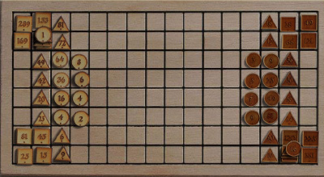
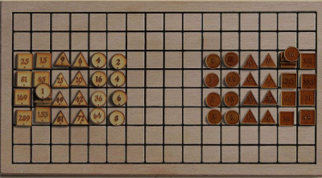
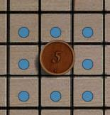
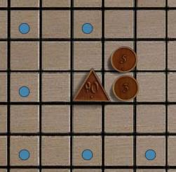
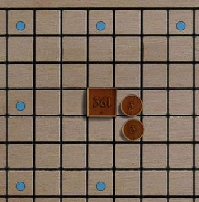
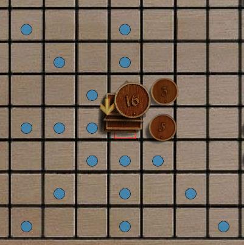

Rithmomachy Variations |
As I interpret the classical rules, a game
would be a long slog, since captured pieces return to the battle,
simple exchanges have little net effect. After a
protracted battle to achieve an advantage of numbers, the victor would
march forward and form a glorious victory as a sort of
flourish. Imagine two philosopher-monks playing one game over
the course of several days.
Initial SetupSome sources place the initial armies in the back rows, or in a phalanx in the center of the board. |
 |
 |
Simple MovementsSome sources have all pieces moving in any direction,
but blocked by intervening pieces.
|
 |
 |
 |
 |
Capture by SiegeA common description of capture by siege is that a piece is captured if all of its 'ordinary movements' are blocked by adversaries. The "orthogonal" directions are considered ordinary, and the "knight's" type moves are considered irregular. So capture by siege could occur for triangles and squares blocked at a distance of 2 or 3. If rounds move only diagonally, I suppose they could be besieged by blocking all 4 diagonals.
|
Capture by Ambush
|
PyramidsNumerous special rules for pyramids
occur in various sources. Among them:
|
||
PrisonersThe classic rules definitely require
the captured pieces to be returned to the back row of the board, in
service of the capturing army. In some variations it is
immediate and automatic, in others it is in place of a move.
In any case, the returned pieces are far from the action and have to be
moved forward to engage or participate in victories. |
Glorious VictoriesThe standard location of the line
defining glorious victories is ambiguous, but probably the usual
location is the enemy's original front line. In most descriptions, glorious
victories require the pyramid to be completely captured first. The pieces participating in the
glorious victory probably are intended to be only pieces under your
control; your own pieces or enemy pieces you have captured
and returned to service. |
Greater VictoriesStandard rules also include "greater
victories" and "greatest victories" which use four pieces and
incorporate two or three types of the ordinary victories. These superior victories almost
always include the ordinary victories as a sub pattern, so in my
interpretation they're about style, or bragging rights. |